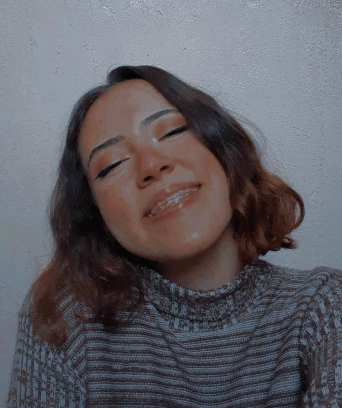
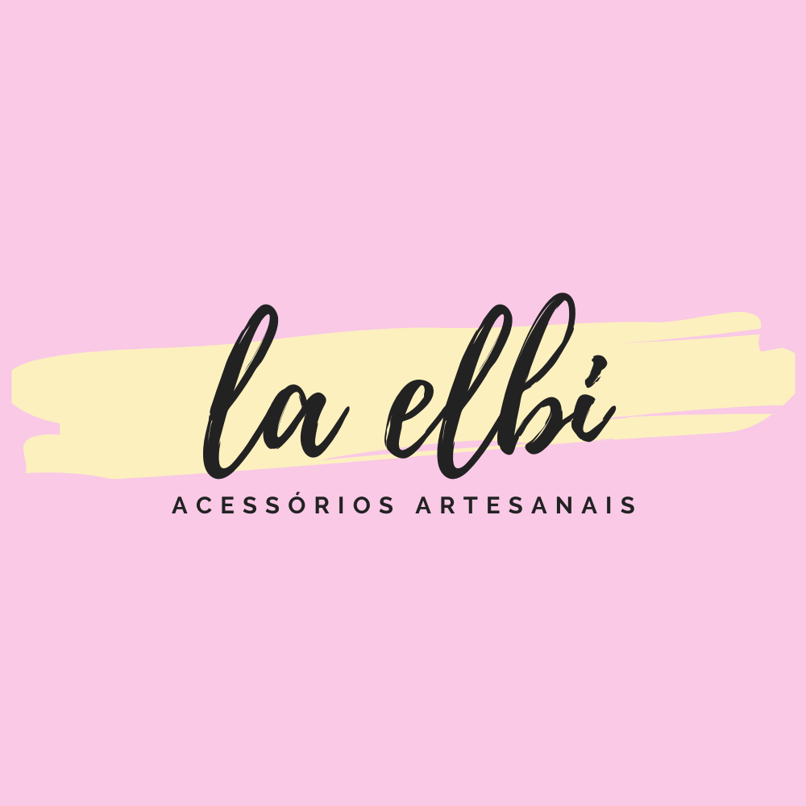
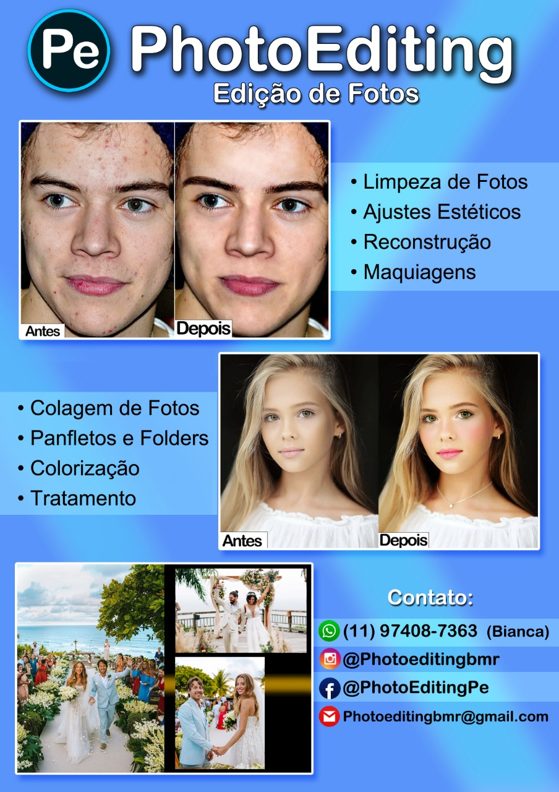

SOBRE MIM

Olá! Meu nome é Bianca Marques, tenho 17 anos e atualmente tenho uma loja de acessórios e trabalho com edição de fotos.
Começei a desenvolver realmente os meus negócios durante a pandemia. Como eu tinha bastante tempo livre com as mudanças para o EaD, passei a pensar e a desenvolver alternativas para eu crescer em algo, e então surgiram minhas oportunidades.
Hoje, eu tenho quase 1 ano completo com a minha lojinha, mais de 6 anos de experiência com edição de fotos e 1 ano e meio trabalhando com o Photoshop.
Desde 2015 eu fazia pulseiras com elásticos para vender entre os meus colegas da escola, e então quando a "modinha" passou, eu passei a trançar pulseiras macramê de linha apenas para o meu uso pessoal. E então, no fim do ano passado, numa conversa com minha melhor amiga, surgiu a ideia de começarmos uma lojinha. Uma loja virtual de acessórios artesanais.


Não lembro ao certo quando começei a dispertar o meu interesse por edição, mas lembro de sentir isso desde muito nova, por influencia do meu pai, que trabalha como fotógrafo e editor. Então eu passava horas e horas todos os dias fuçando e mexendo nas ferramentas do Photoshop, tentando reproduzir algumas coisas que via meu pai fazendo. E foi desse amor por edição, que depois de tantos anos de treinamento, eu passei a trabalhar informalmente com edição de fotos.
© TODOS OS DIREITOS RESERVADOS
Bianca Marques (GU3016854) IDF